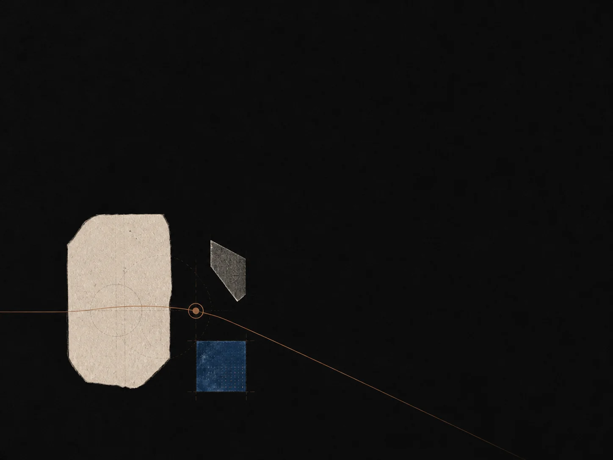

提问优先于表现
我们为智识上的诚实而设计：带着不完整的想法开始，应当是安全的。我们的界面奖励你能清晰说出的下一个问题，而不是最长的输出。
公司
我们在打造一种更安静的 AI 伙伴：它奖励好奇心、保留上下文，并帮助人们形成自己的观点。
为什么是 Socrates
AI 让人很容易过早地翻篇。我们认为它更好的角色，是为反思、练习，以及更高质量的问题留出空间。

我们的承诺
衡量一个学习产品的标准，不是它让你滑动多久，而是你离开时，是否对自己知道什么、以及如何知道的，拥有了更多主动权。
我们为智识上的诚实而设计：带着不完整的想法开始，应当是安全的。我们的界面奖励你能清晰说出的下一个问题，而不是最长的输出。
有用的导师会记得进入一个问题的路径，而不是把每次提问都当成孤立事件。你的知识地图、回忆队列，和之前的尝试，始终可见。
理解通过提取、解释和修订而增长——而不是靠更多的输出堆积。我们会把需要你自己尝试的部分呈现出来。
我们在语气、节奏和界面上做出审慎的选择，让想法有呼吸的空间。动画是克制的，语言是平实的，页面懂得何时安静。
当导师不确定时，它会直说。我们绝不用一句流畅的话，去掩盖模型知识中诚实的缺口。
对话是私密的。我们不会用它们来训练。你可以从账户页导出或删除每一次会话，而且我们的隐私说明写得通俗易懂。
它如何开始
Socrates 始于两个人的小笔记本实验，他们分别在不同大学教数学和计算机科学。我们想要一位能陪学生度过艰难第二周的导师——那是最初的热情消退、真正的工作开始的时期。
谁在构建它
Socrates 背后的团队曾在大学任教、编写教材、批改过大量迟交的作业，也看着许多学生在同样的地点卡住。我们不是那种在推出学习产品时，却不懂学一门难课是什么感受的公司。
我们如何工作
我们发布小而审慎的改进，并为每一次写下简短的公告。我们宁愿一周交付一个好点子，也不愿一个月做一次喧闹的发布。你可以在新闻室读到每一次变化。
我们将去向何处
接下来的一年，我们关注经得起时间考验的知识地图、尊重你一周安排的学习计划，以及认真对待问题的考试模式。路线图很短，用平实的语言写成，并随着我们所学不断更新。
开放的对话
我们回复收到的每一条用心写下的留言。合作构想、教育研究协作，以及 Socrates 使用者的问题，我们都欢迎。